cocoon Prototype - Story Noodle
【小時光麵館】第一話 栗子蛋糕
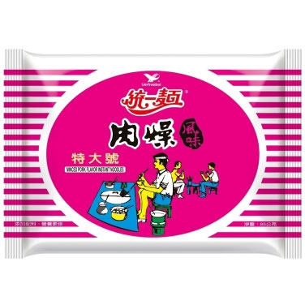
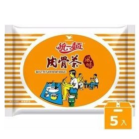
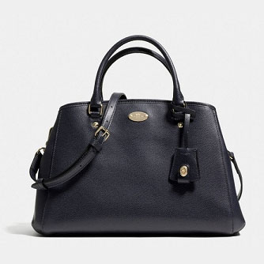
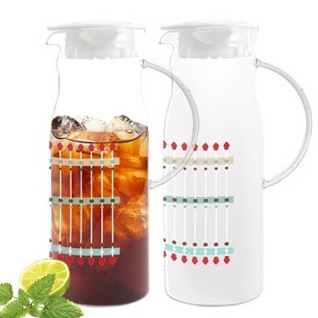
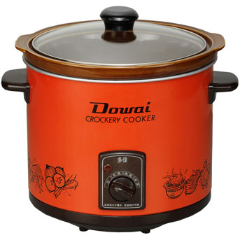
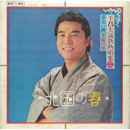
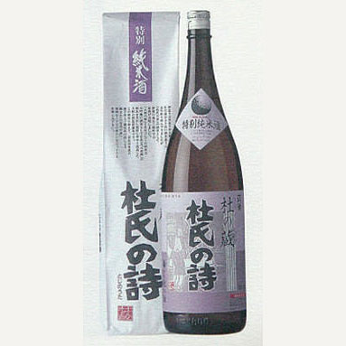
【小時光麵館】第二話 心碎的滋味
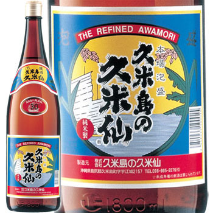
swiftMark
socialShare
share to facebook
share to twitter
share to tumblr
share to googleplus
share to pinterest
share to blogger
share to mail
 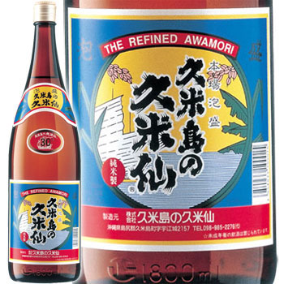
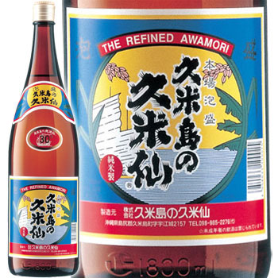
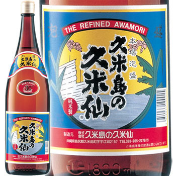
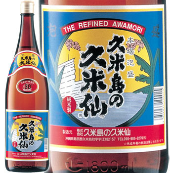